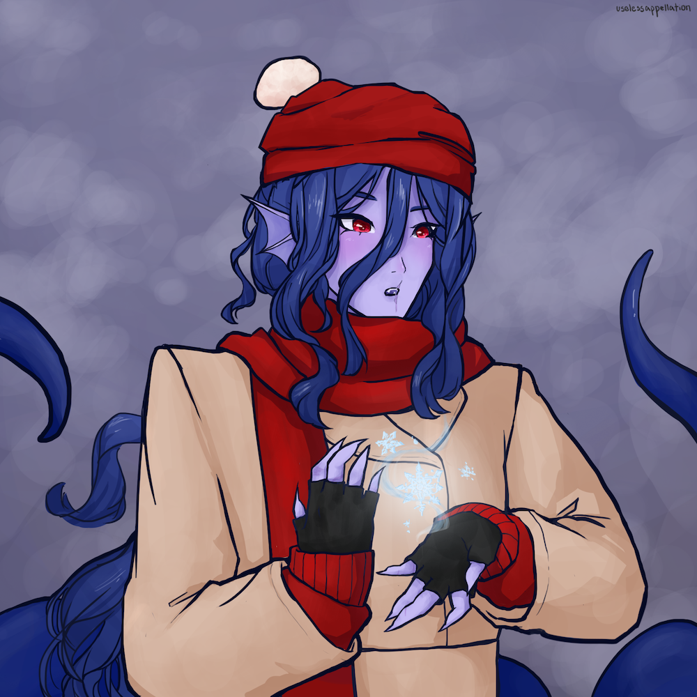

winter thessal
This illustration was done for a winter/holiday-themed contest. It features a character design from Realm of the Mad God, Thessal the Mermaid Goddess. Imagining that she primarily spends time underwater, I thought that her interacting with the more land-locked winter wonders would be an interesting subject.
Seeing as this is one of my more recent pieces, it utilizes more skills/tools than previous works. More of my current work includes both a solid/cel shading and a softer shade, often utilizing clipping masks and layers using multiply. This illustration was done on a relatively quick timeline, so is not too complex. The background isn't entirely concrete, but is meant to convey a cold, snow-like atmosphere. I think I could add some more details to the fabric texturing and the background, but overall I am relatively satisfied with the result.
Adobe Photoshop; December 2021